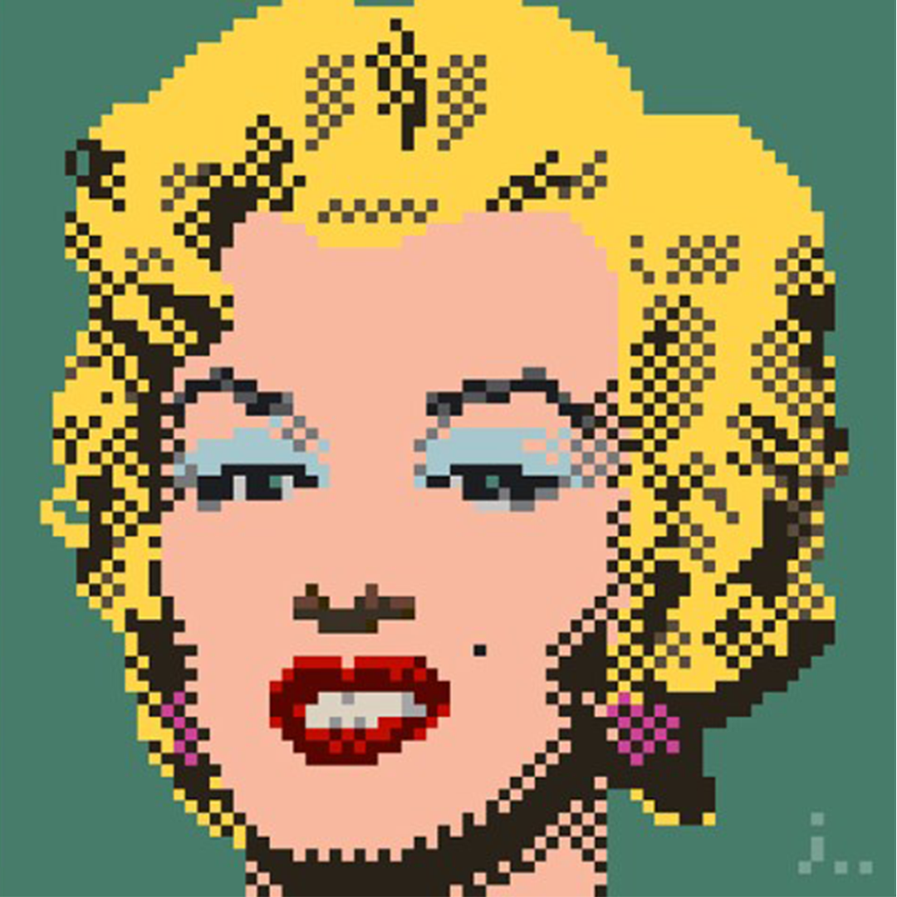
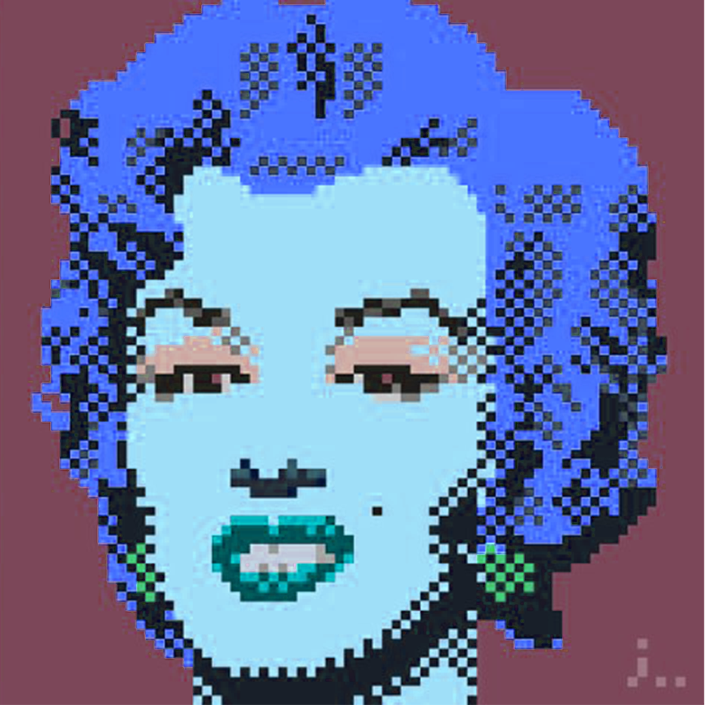
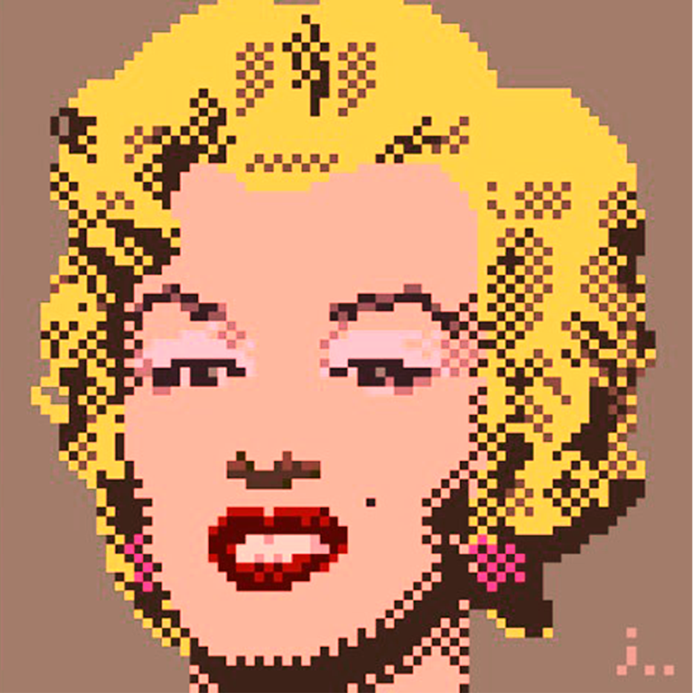
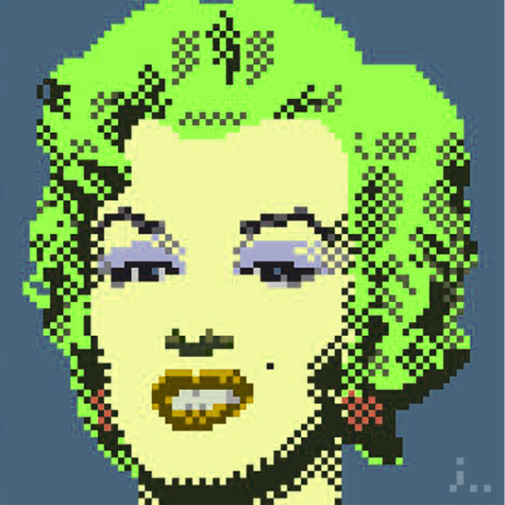
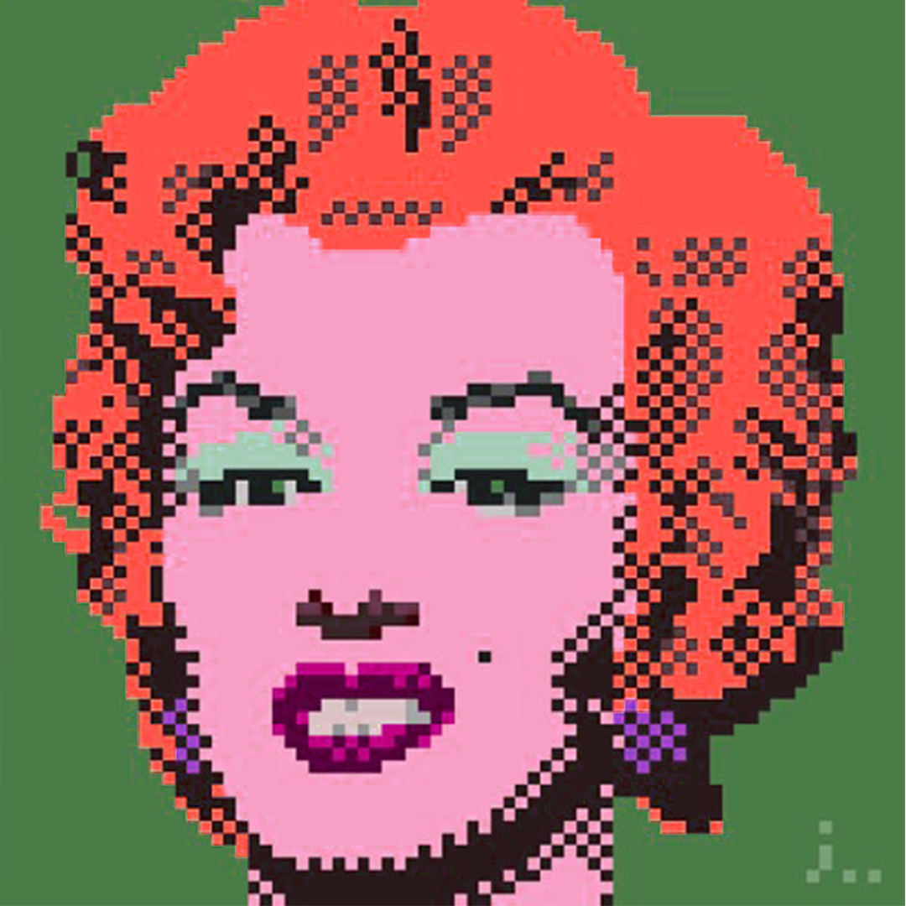
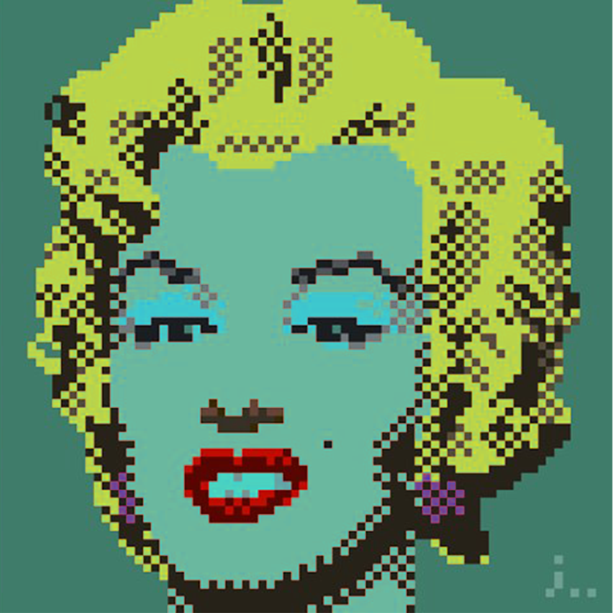

ой, меня немного поплющило от этого всего
да что же здесь такое происходит ?
да что же здесь такое происходит ?
да что же здесь такое происходит ?
да что же здесь такое происходит ?
да что же здесь такое происходит ?
да что же здесь такое происходит ?
да что же здесь такое происходит ?
да что же здесь такое происходит ?
да что же здесь такое происходит ?
интересно девки пляшут
     интересно девки не пляшут
пока не работает
max-width
max-width Устанавливает максимальную ширину блочных тегов и некоторыйх строчных (например img) max-width Устанавливает максимальную ширину блочных тегов и некоторыйх строчных (например img) max-width Устанавливает максимальную ширину блочных тегов и некоторыйх строчных (например img) max-width Устанавливает максимальную ширину блочных тегов и некоторыйх строчных (например img) max-width Устанавливает максимальную ширину блочных тегов и некоторыйх строчных (например img) max-width Устанавливает максимальную ширину блочных тегов и некоторыйх строчных (например img) max-width Устанавливает максимальную ширину блочных тегов и некоторыйх строчных (например img) max-width Устанавливает максимальную ширину блочных тегов и некоторыйх строчных (например img)
min-width
min-width Устанавливает минимальную ширину блочных тегов и некоторыйх строчных (например img) min-width Устанавливает минимальную ширину блочных тегов и некоторыйх строчных (например img) min-width Устанавливает минимальную ширину блочных тегов и некоторыйх строчных (например img) min-width Устанавливает минимальную ширину блочных тегов и некоторыйх строчных (например img) min-width Устанавливает минимальную ширину блочных тегов и некоторыйх строчных (например img) min-width Устанавливает минимальную ширину блочных тегов и некоторыйх строчных (например img) min-width Устанавливает минимальную ширину блочных тегов и некоторыйх строчных (например img) min-width Устанавливает минимальную ширину блочных тегов и некоторыйх строчных (например img)
max-height
max-height Свойство не наследуется max-height Свойство не наследуется max-height Свойство не наследуется max-height Свойство не наследуется max-height Свойство не наследуется max-height Свойство не наследуется max-height Свойство не наследуется max-height Свойство не наследуется
min-height
min-height Свойство не наследуется min-height Свойство не наследуется min-height Свойство не наследуется min-height Свойство не наследуется min-height Свойство не наследуется min-height Свойство не наследуется min-height Свойство не наследуется min-height Свойство не наследуется
overflow
ПОСКРОЛЬ МЕНЯ! overflow Управляет отображением содержания блочного элемента visible - Отображается все содержание элемента, даже за пределами установленной высоты и ширины. hidden - Отображается только область внутри элемента, остальное будет скрыто. scroll - Всегда добавляются полосы прокрутки. auto - Полосы прокрутки добавляются только при необходимости ПОСКРОЛЬ МЕНЯ! Управляет отображением содержания блочного элемента visible - Отображается все содержание элемента, даже за пределами установленной высоты и ширины. hidden - Отображается только область внутри элемента, остальное будет скрыто. scroll - Всегда добавляются полосы прокрутки. auto - Полосы прокрутки добавляются только при необходимости ПОСКРОЛЬ МЕНЯ! Управляет отображением содержания блочного элемента visible - Отображается все содержание элемента, даже за пределами установленной высоты и ширины. hidden - Отображается только область внутри элемента, остальное будет скрыто. scroll - Всегда добавляются полосы прокрутки. auto - Полосы прокрутки добавляются только при необходимости ПОСКРОЛЬ МЕНЯ! Управляет отображением содержания блочного элемента visible - Отображается все содержание элемента, даже за пределами установленной высоты и ширины. hidden - Отображается только область внутри элемента, остальное будет скрыто. scroll - Всегда добавляются полосы прокрутки. auto - Полосы прокрутки добавляются только при необходимости ПОСКРОЛЬ МЕНЯ! Управляет отображением содержания блочного элемента visible - Отображается все содержание элемента, даже за пределами установленной высоты и ширины. hidden - Отображается только область внутри элемента, остальное будет скрыто. scroll - Всегда добавляются полосы прокрутки. auto - Полосы прокрутки добавляются только при необходимости ПОСКРОЛЬ МЕНЯ! Управляет отображением содержания блочного элемента visible - Отображается все содержание элемента, даже за пределами установленной высоты и ширины. hidden - Отображается только область внутри элемента, остальное будет скрыто. scroll - Всегда добавляются полосы прокрутки. auto - Полосы прокрутки добавляются только при необходимости ПОСКРОЛЬ МЕНЯ!
display
Лёгким движением руки строчный элемент превращается в блочный Лёгким движением руки строчный элемент превращается в блочный Лёгким движением руки строчный элемент превращается в блочный Лёгким движением руки строчный элемент превращается в блочный Лёгким движением руки строчный элемент превращается в блочный Лёгким движением руки строчный элемент превращается в блочный Лёгким движением руки строчный элемент превращается в блочный Лёгким движением руки строчный элемент превращается в блочный Лёгким движением руки строчный элемент превращается в блочный Лёгким движением руки строчный элемент превращается в блочный Лёгким движением руки строчный элемент превращается в блочный
Лёгким движением руки блочный элемент превращается в строчный Лёгким движением руки блочный элемент превращается в строчный Лёгким движением руки блочный элемент превращается в строчный Лёгким движением руки блочный элемент превращается в строчный Лёгким движением руки блочный элемент превращается в строчный Лёгким движением руки блочный элемент превращается в строчный